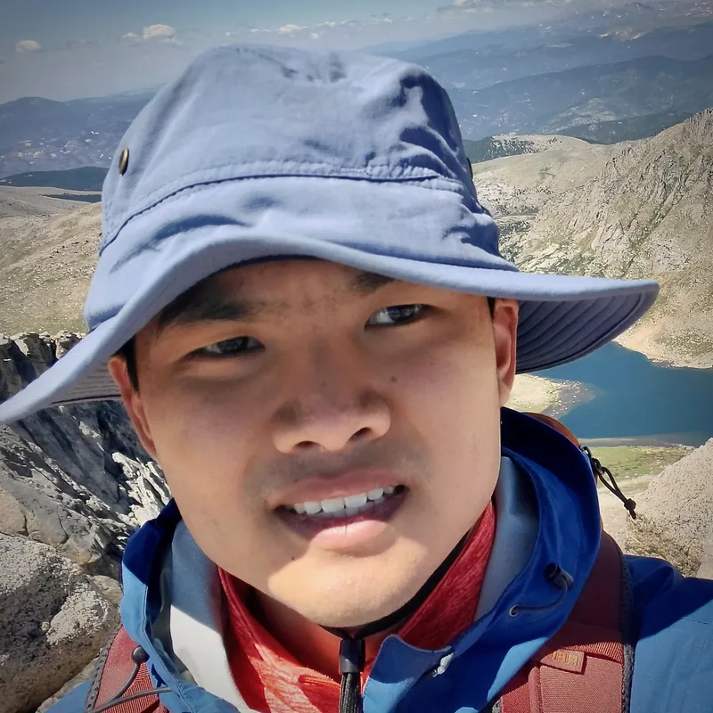

Patrick Lei
Postdoc at the Shanghai Center for Mathematical Sciences, Fudan University.
1 – 7open a section
h / lfocus left / right
fzoom the focused window
qclose the focused window
Escclose everything
Postdoc at the Shanghai Center for Mathematical Sciences, Fudan University.

I am a postdoc at the Shanghai Center for Mathematical Sciences at Fudan University. Previously, I was a Visiting Assistant Professor (postdoc) in mathematics at Boston College, mentored by Qile Chen. I completed my PhD at Columbia University, advised by Melissa Liu. My research is in algebraic geometry, particularly higher-genus Gromov–Witten theory.
You may also know me from UMass Amherst, where I was advised by Paul Hacking and also majored in computer science. Or we may have met at a conference or a seminar.
Besides doing math, I also enjoy running and playing the piano. I also like to learn about the historical evolution of Chinese dialects. I'm always open to suggestions for affordable but legitimately high-quality Sichuan cuisine.
Learning seminars I have organised, newest first.
| 2025-01 | Calculations seminar | calculations in enumerative geometry |
| 2024-01 | Blowup formula seminar | the blowup formula in Gromov–Witten theory |
| 2024-01 | Quantum information | undergraduate seminar |
| 2023-09 | Toric varieties | undergraduate seminar |
| 2022-01 | Geometric rep theory | D-modules and localization |
| 2021-09 | Category O | for semisimple Lie algebras |
| 2021-01 | Intersection theory | |
| 2020-09 | Geometric invariant theory |
Live-TeXed notes from courses and seminars, as PDF and HTML. They live on their own site.
| intro | Higher-genus Gromov–Witten theory |
| notes | The B-model |
| notes | Topological cyclic homology |
| all | plei99.github.io/notes |
Figures are compiled from TikZ to SVG; text via tex4ht; equations to MathML.
The full site has a globe you can spin. Here, a list will do.
What I'm doing these days.
| laptop | 14 inch MacBook Pro (M4 Pro) |
| editor | neovim, VS Code |
| wm | none (macOS), hyprland (Linux) |
| ai | Codex, Claude Code |
| Zathura (Linux), Skim (macOS) |
| race | Saucony Endorphin Pro 4 |
| tempo | Saucony Endorphin Speed 5 |
| daily | Adidas Adizero Evo SL |
| race | Asics Metaspeed Edge Tokyo |
| fuel | Maurten Gel 100 |
| watch | Garmin Forerunner 970 |